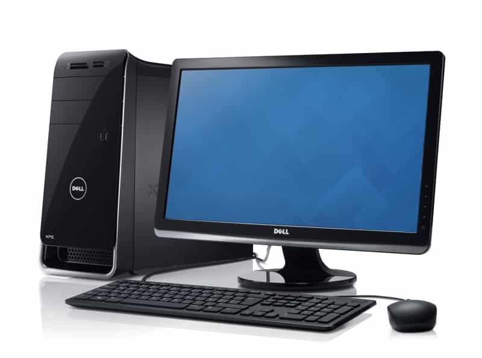

A computer is a digital electronic machine that can be programmed to carry out sequences of arithmetic or logical operations automatically. Modern computers can perform generic sets of operations known as programs.
The functions of a computer typically include the following tasks: taking data, processing it, returning results, and storing it. To help computer systems perform these functions, computer devices can be classified as input devices, processing devices, output devices, and storage devices, respectively.
A Central Processing Unit (CPU) A Graphics Processing Unit (GPU), also known as a video card. Random Access Memory (RAM), also known as volatile memory. Storage: Solid State Drive (SSD) or Hard Disk Drive (HDD).
There are three types of computer
An Analog Computer is it also call analogue computer is a type of computer that uses the continuously changeable aspects of physical phenomena such as electrical, mechanical, or hydraulic quantities to model the problem being solved.
Digital Computer The definition of a digital computer is the most commonly used type of computer and is used to process information with quantities using digits, usually using the binary number system. .A computing device (computer) that processes signals that change in discrete, quantized, steps; as opposed to an analog computer.
Hybrid Computers are computers that exhibit features of analog computers and digital computers. The digital component normally serves as the controller and provides logical and numerical operations, while the analog component often serves as a solver of differential equations and other mathematically complex equations. Classification of computers Computers are also available in difference size and with different capacity.
Generation in computer terminology is a change in technology a computer is/was being used. Initially, the generation term was used to distinguish between varying hardware technologies. Nowadays, generation includes both hardware and software, which together make up an entire computer system.
There are five computer generations known till date. Each generation has been discussed in detail along with their time period and characteristics.
"Computers are incredibly fast, accurate, and stupid. Human beings are incredibly slow, inaccurate, and brilliant. Together they are powerful beyond imagination." -Albert Einstein.
These are contents:
{kind=link}